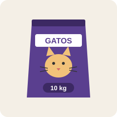
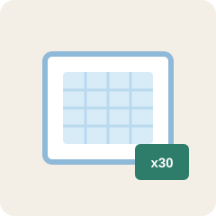

Cama pet redonda acolchoada – tamanho M
Cama redonda com bordas altas e enchimento em fibra siliconada. Tecido lavável e base antiderrapante. Indicada para cães e gatos de até 15 kg (60 cm de diâmetro).
Valor: R$ 129,90
Carinho, saúde e bem-estar para o seu melhor amigo.
Endereço: Rua das Acácias, 120 – Jardim Primavera – São Paulo/SP
Telefone/WhatsApp: (11) 90000-0000 |
E-mail: contato@patinhasecia.com.br
Horário: segunda a sexta, 8h às 19h; sábado, 8h às 14h
Confira os produtos disponíveis na loja, organizados em três categorias. Clique em uma categoria para ir direto a ela:
Roupas, brinquedos, camas e outros itens para o conforto e a diversão do seu pet.
Cama redonda com bordas altas e enchimento em fibra siliconada. Tecido lavável e base antiderrapante. Indicada para cães e gatos de até 15 kg (60 cm de diâmetro).
Valor: R$ 129,90
Bolinha de borracha atóxica e resistente, com textura que ajuda na limpeza dos dentes. Ideal para brincadeiras de buscar. Diâmetro de 7 cm.
Valor: R$ 24,90

Moletom de algodão com punho elástico e estampa de patinha. Mantém o pet aquecido nos dias frios. Para cães de 3 a 6 kg.
Valor: R$ 59,90
Rações secas de longa validade, balanceadas para cada fase da vida e espécie.

Ração premium sabor carne e cereais para cães adultos de porte médio e grande. Rica em proteínas, com ômega 3 e 6 para pele e pelagem saudáveis.
Valor: R$ 189,90

Fórmula sabor salmão com baixo teor de gordura, que auxilia no controle de peso e na saúde do trato urinário de gatos castrados.
Valor: R$ 159,90

Ração sabor frango com grãos menores, cálcio e DHA para o crescimento saudável de filhotes de 2 a 12 meses.
Valor: R$ 69,90
Produtos para manter o pet e a casa sempre limpos e cheirosos.

Tapete com gel superabsorvente que transforma o xixi em gel, base impermeável e atrativo canino que ajuda no adestramento. Tamanho 60 x 60 cm.
Valor: R$ 79,90
Fralda com fitas ajustáveis e abertura para a cauda. Indicada para cadelas no cio, cães idosos ou com incontinência. Para cães de 3 a 7 kg.
Valor: R$ 44,90

Shampoo hipoalergênico com pH balanceado, sem corantes. Limpa suavemente e deixa a pelagem macia e brilhante.
Valor: R$ 34,90
Gostou de algum produto? Entre em contato pelo telefone, WhatsApp ou e-mail informados no topo da página para fazer seu pedido. Valores sujeitos a alteração sem aviso prévio.